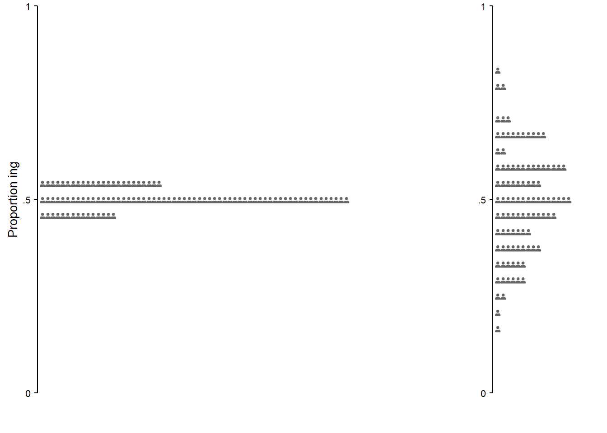
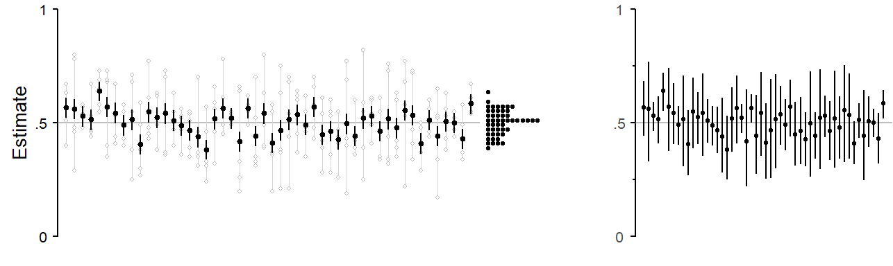
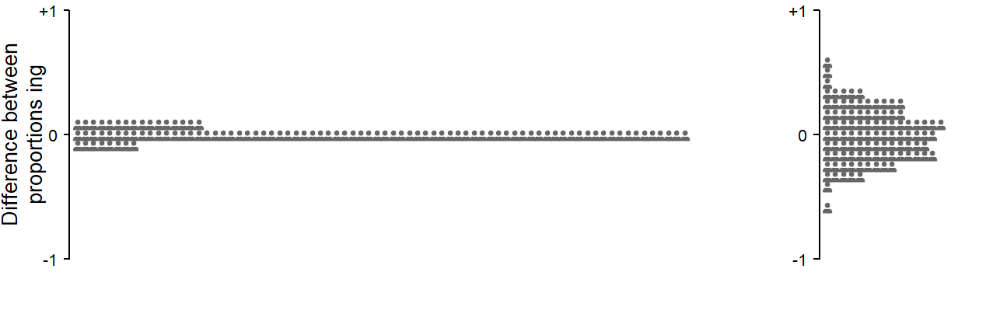
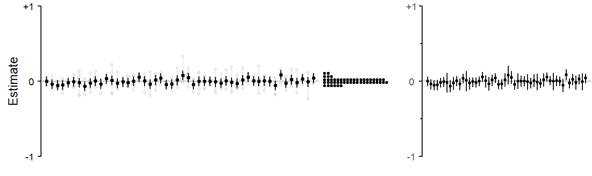
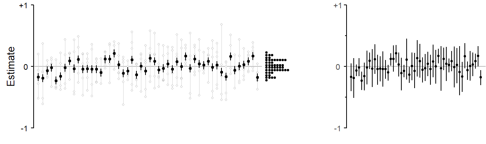

3 Statistical inferences
As researchers, it is usually our aim to use a particular set of data to make statements that hold more generally. This means that we would like to extend the insights gained from our sample to a broader set of contexts or entities – the population. Due to its everyday meaning, the term population is most easily linked to a large collection of speakers to which we may wish to generalize (e.g. all native speakers of English). The technical term serves a wider purpose, however. The statistical notion of a population can refer to finite or infinite collections of observations or units. Thus, at the level of the individual speaker, a sample of speech (or writing) could be drawn to make inferences about the language use of this individual. For a particular language, a sample could be drawn from the population of (i) inanimate nouns, (ii) transitive verbs, or (iii) gradable adjectives.
3.1 Relation to scientific objectives
Let us start by clarifying the supplementary function of statistical inferences in the context of our scientific objectives (see Figure 2.1)). First, statistical inferences are descriptive inferences: They produce uncertainty statements on the outcome scale. We will therefore use the terms “statistical inference” and “descriptive inference” interchangeably. As for the second dimension, statistical inferences allow us to generalize beyond the observed set of units, and are therefore geared towards broad inference. Recall, however, the different levels of generality illustrated in Figure 2.4 and Figure 2.5.
3.2 Rationale
To illustrate the rationale behind statistical inference, let us consider the ideal setting: There is a well-defined, large population about which we wish to make inferences. Of interest is a certain feature of this population, which can be expressed quantitatively, say, using a percentage. If we were able to study the entire population, this quantity, called the population parameter, would be known with certainty. However, we can only study a much smaller subset of the population. We will discuss two settings. In the first, the population is unstructured in the sense that, for the inferential task at hand, there are no relevant groups, or sub-populations. In the second setting, the population can be partitioned into meaningful subgroups – we first select groups and then sample from these groups.
3.2.1 Sampling from a population
Let us first consider the unstructured setting. To estimate the population parameter, we draw a random sample, say, of size 80. Random sampling means that each unit in the population has the same probability of being selected. This sample of 80 units then forms the basis of our statistical inferences about the underlying population. We calculate the quantity of interest using our sample data. This yields a sample statistic, our best guess at the population parameter.
Inferential statistics is based on the following idea: While we have ended up with our specific sample, we could, in principle, have obtained a different set of observations from the population. In that sample, the percentage (our estimate) would have been different. This sample-to-sample variation leads to uncertainty surrounding our sample statistic: Our sample-based estimate will differ from the population parameter due to sampling variation and sampling error.
Sampling variation can be illustrated using simulation. We first need to define a population and a population parameter (e.g. a percentage). From this population we then repeatedly draw samples of size 80 and observe how the sample-based estimates fluctuate around the true value, i.e. how much they are in error. Figure 3.1 shows a simulated sampling setting, with the population parameter set to 1/3 (or 33%). We draw 100 samples from this population. The estimated proportions, each based on 80 observations, seesaw around the population parameter of 1/3, which is marked with a grey horizontal line. The dot diagram at the right margin collects these 100 estimated proportions and shows their distribution around the target parameter. Panel (b) shows the same simulation setting, but with smaller sample sizes (20 instead of 80). With smaller samples, we observe greater variation among estimates. On average, the estimates are further from the true parameter.
Each point estimate in Figure 3.1 comes with an uncertainty estimate, in the present case a 95% confidence interval. Confidence intervals are a statistical tool that can be used to express the uncertainty surrounding a sample statistic. For the present data setting, where the outcome is binary and the estimated quantity is a proportion, statistics offers methods for computing confidence intervals. This method is designed to perform as shown in Figure 3.1): In the long run, 95% of the intervals it produces include the target parameter. However, statistical theory guarantees this performance only if the samples are drawn at random from the underlying population.
3.3 Sampling from a structured population
Let us now consider a situation where we have not one set of independent units, but rather observations that are grouped in some meaningful way. These groups of data points could represent different categorical features. They could be different genres, different speakers, different semantic classes of nouns, or different words. These variables differ in terms of the number of existing groups, or levels of the grouping variable. The set of semantic classes for nouns is finite, and a study could include all levels of this variable. The number of genres, on the other hand, while finite, is much larger. A study is unlikely to be able to include even a near-exhaustive collection of genres. The same is true for words. Finally, the set of speakers is usually even larger.
These classificatory variables also differ in terms of the amount of research interest that attaches to the individual levels that are included in a study. Thus, each semantic class will be of interest, as well as comparisons among them. The same is usually true for genres. As for individual words, the researcher only sometimes attends to the individual forms under investigation. Finally, particular speakers are usually not of direct interest.
In terms of the horizontal dimension in Figure 2.1, then, we usually wish to generalize across speakers – they usually serve to inform broad-inference estimates. For semantic classes, on the other hand, our concern is with the set at hand, and generalizing beyond a fixed set of semantic categories might be linguistically meaningless. Depending on the focus of a study, genre and word fall somewhere in between these two poles – words perhaps leaning towards the broad-inference pole, and genres to the narrow-inference end.
We will therefore distinguish two canonical cases. In the narrow-inference case, the set of groups under study is of interest in itself. We do not intend to generalize beyond the observed groups, to other unobserved groups. This could be because the set of groups in our sample is exhaustive, and generalization may be therefore be meaningless; or perhaps we have the deliberate decision to restrict our focus to the subset at hand. In the narrow-inference case, we refer to the groups as strata. In the other setting, the broad-inference case, generalization beyond the set of groups observed is a primary concern. This would be the case if the set of groups is a small fraction of a much larger population of groups. In the broad-inference case, we will refer to the groups as clusters.
3.3.1 Stratified sampling
- illustrates stratified sampling. There are 5 groups, or strata, and for each simulation run, we sample 100 observations from each stratum. Groups are distinguished using different colors, and the values produced by a single simulation run are connected by a thin vertical line. Each stratum has its own underlying population parameter: .30 (grey), .35 (blue), .50 (red), .60 (green), and .75 (yellow). Similar to the sampling variation shown in Figure 3.1), there is sample-to-sample variation around these population parameters. The dot diagrams in the far right panel (c) show, for each stratum, the distribution of simulated sample statistics. The dot diagram in panel (b) collapses these into a single distribution of estimates.
In panel (a), estimates of the overall population average, i.e. the simple average over the five strata is shown using black filled circles. The average proportion over the five sub-population parameters is .50. The estimates hover tightly around this true value, and the statistical uncertainty, as indicated by the error intervals, is quite small. These uncertainty intervals are narrow-inference intervals: They refer only to the five strata and statistical inferences therefore also extend only to these five groups – in this case, the simple average over the five groups.
3.3.2 Cluster sampling
Figure 3.3 illustrates cluster sampling. Each simulation run samples 100 observations from each of five groups, or clusters – similar to the setting just discussed. In contrast to stratified sampling, however, we do not repeatedly sample from the same five groups. Instead, the groups themselves are also a random sample from a much larger population of groups. This means that there is now sampling variation at two levels: From each group that is selected, we draw a random sample of 100 observations. This leads to the kind of sample-to-sample variation that we saw in Figure 3.1), and which also appear is 1), in the for of the colored dot diagrams in panel (c). For cluster sampling, there is a second source of sampling variation: The five groups are selected from a population of groups. This population of groups has a true underlying population average (also set to .50 in the current example), and a dispersion parameter indicating the variation among groups (here a standard deviation of 0.65 on the logit scale). The amount of variation among groups in the population is indicated in panel (b), which collects all cluster estimates. Drawing five clusters from this population will produce considerable fluctuation around the population parameter of .50. This is evident from the much more lively vacillation of the simulated group sets, which are again connected by a thin vertical line, as well as the variation of the averages based on the simulated cluster sets.
The uncertainty intervals in panel (a) are narrow-inference estimates, and therefore of the same type as those shown in 1). These error intervals fail to provide adequate coverage of the true population parameter of .50. Each interval does provide a valid uncertainty indication for the 5 clusters that happened to occur in a particular simulation run. For statistical inferences reaching beyond these five units, the error intervals are not adequate, since they do not take into account the extra sampling variation that is due to the fact that our 5 groups are also a random sample from a population of groups. Panel (c) shows the same point estimates as panel (a), but with uncertainty intervals adjusted from this additional source of variation. These are broad-inference estimates.
3.3.3 Cluster sampling: Estimating averages



3.3.4 Cluster sampling: Estimating differences



3.4 Random sampling as a methodological device
3.4.1 The role of random sampling
The statistical theory underlying the calculation of uncertainty estimates rests on certain idealizations. Thus, one critical assumption is that the sample at hand is a random sample from the population of interest. A sample can be considered random if each unit in the population has the same probability of being selected. This random, equal-probability feature guarantees, in the long run, the absence of systematic distortions in the resulting samples and thereby avoids systematic musrepresentation of the population. It means that the kinds of samples obtained via this process are, on average, unbiased in the sense that they do not over- or underrepresent certain parts of the population. The sample does not differ in some systematic way from the population. This does not mean that the random subset we obtain can be considered a miniature version of the target population. It just means that there is no systematic discrepancy.
In practice, random sampling is a methodological device. It is a data collection strategy that avoids biased samples – there is no reason to question the regresentativeness of a random sample. It allows the researcher to justify generalizations to the population on statistical grounds, and take statistical inferences at face value. It is a long-run guarantee of valid descriptive inferences. It also guards against methodological criticism.
Only in such idealized settings, then, can the researcher appeal to statistical theory to justify generalizations from sample to population. These idealized settings are captured in the set of assumptions underlying a statistical procedure – random sampling is one of these assumptions. From the viewpoint of statistical theory, these assumptions are prerequisites to valid descriptive inferences. Statistical theory can provide long-run guarantees only if prerequisites are met.
3.4.2 Relation to inference types
Unbiased samples are essential for descriptive inference and broad inference. They are less essential for analytic inference and narrow inference.
Mook (1983) Mook (1982) Cox (1958)
However, we need to carefully weigh the pros and cons of this procedural decision (Mook 1982, 33–38).
3.4.3 Inferences from non-random samples
Beyond these idealized circumstances, statistical theory does not provide safeguards against erroneous inferences. Whenever the data at hand depart from the assumptive ideal, extra-statistical knowledge must be brought to bear on the inferential task. The question of how much meaning we may attach to statistical inferences is a matter of judgement. The researcher must decide to which extent the prerequisites to (or assumptions for) valid inferences are met and what consequences imperfections have for our linguistic conclusions. Such judgement is necessarily based on incomplete knowledge. As (Cobb 1998, 385) notes: “Then (as always), you can cross your fingers and substitute an assumption for the information you wish you had, being careful to remind yourself that the more untested assumptions you make, the more tentative your conclusions should be.”
When working with non-random samples, the important question is whether the sampling procedure that was used has given rise to an unrepresentative sample. A sample is unrepresentative if it differs from the population in terms of relevant factors (Bottai 2014, 229), that is, factors to which the outcome quantity is sensitive. The question of whether the sampling process was biased in some way can only be answered by knowledge about the sampling method used, the target population and relevant factors. If we genuinely conclude that, to the best of our current knowledge, our sample does not suffer from systematic distortions, we can consider the set of observations at hand as representative of the target population. Given this working state of knowledge, methods of statistical inference may be applied. In this context, Fisher (1956, 33) talks of “necessary ignorance” as a prerequisite to descriptive inferences. As (Johnstone 1989, 449, emphasis in original) notes, “[h]owever, this ignorance must be bona fide. It remains a cardinal methodological sin to suppress or ignore relevant information, either actively or by leaving particular stones unturned.”
In the Bayesian approach to statistical inference, the assumption of random sampling corresponds to the notion of exchangeability (Lindley and Novick (1981); Draper et al. (1993)], which is the assumption of similarity (and therefore, for practical purposes the interchangeability) of observed units in the sample and the unobserved units in the population. A biased sampling process would lead to dissimilar, non-exchangeable sets of entities.
In cases where we discern differences between our sample and the target population, we are unable to produce valid inferences for the population of interest. In such cases, we first need to clearly state the discrepancies. The sample will then not represent the entire target population, but a particular subset of it. This subset is often called the sampled population (Cochran 1983, 4) or the ad-hoc population (Mook 1982, 37), and it is the conceptual population to which we may extend our descriptive inferences.
Before we consider questions of random sampling in the context of corpus data analysis, let us briefly summarize the main points so far. Random sampling is helpful methodologically, but what ultimately matters for valid statistical inference is the absence of bias from the sample. If the researcher’s line of argument depends (in part) on statistical inferences, they will need to defend their validity. If random sampling was used, we can appeal to statistical theory. In the absence of random sampling, we have to convince ourselves and our audience that the sampling process we used was unbiased. If we detect systematic mismatches between sample and target population, we can specify the sampled population to which our inferences may legitimately apply.
3.5 Corpus data: Non-random samples
Statistical inference can also be applied for non-random samples. Then, however, statistical theory no longer offers a protective belt against discrepancies between the target of our inferences and the information at hand. There is no guarantee of absence of bias in our sample. This does not mean that statistical inferences cannot be made. But with non-random samples, the researcher’s expertise and judgement is called for in order to decide which interpretations can be attached to inferential results. This could involve an explicit formulation of the sampled population, i.e. the population that our non-random sample does represent, and how it differs from the population of interest, or target population.
The question of corpus data and random sampling can be addressed from two perspective: (i) the compilation of the corpus and (ii) the set of observations extracted to address a particular research question.
Constraints on generality
“Very often the attempt to select a representative sample of some population is unnecessary , or more trouble than it is worth, or even impossible in principle.” (Mook 1982, 38)
3.5.1 Corpus compilation
For corpus compilation, it seems difficult to carry out actual random sampling. It is impossible to enumerate the units in the population of interest – for a spoken corpus, these are the speakers of a particular language (variety); for a written corpus, the collection of written texts produced by the population of interest. This enumeration, however, is necessary to assign equal probability to each unit in the population. Nevertheless, a researcher can take precautions to strengthen the regresentativeness and therefore the validity of statistical inferences. Through careful definition of the target population, the arrangement of a sampling frame, and the use of near-random selection procedures, an effort can be made to avoid systematic discrepancies between sample and population. A further desirable feature is to give equal weight to the sampled units, which would mean that roughly the same number of words are taken from each speaker or text.1 However, potential imbalances can also be addressed at the analysis stage, where the units can be treated even-handedly.
1 Spoken BNC2014
3.5.2 Corpus data
When using corpora as a source of data on a particular linguistic phenomenon, we extract relevant hits from a corpus. This set of hits then constitutes the sample on which our analyses and interpretations are based. If the compilation of the corpus took methodological precautions against bias, it appears reasonable to assume that this will carry forward into the set of corpus hits at hand. Note, however, that the structure of interest may be used at different rates by different speakers. Thus, a perfectly balanced corpus, with the same number of words sampled, say, from each text, does not guarantee balanced token counts for the structure of interest. This, again, would need to be addressed at the analysis stage.
Depending on the type of structure we are studying, there may be additional populations from which we are effectively sampling. For instance, when studying certain type of syntactic pattern, say ditransitive constructions, these will be instantiated by different lexical elements. We are therefore also sampling from the population of ditransitive verbs. Or consider the English comparative alternation, where we are sampling from the population of gradable adjectives. This kind of sampling occurs on a language-internal level, and the researcher has no control over the kinds of lexical units returned by a corpus query. In fact, the set of corpus hits will show decisively non-random features, due to universal distributional features of language use. Overall, the selection of units obtained will be biased towards higher-frequency forms, which are more likely to be observed and therefore make it into our sample. Further, the token distribution across lexical units (e.g. gradable adjectives) will be uneven, and very likely skewed.
It is fair to say that corpora and corpus data rarely (if ever) represent truly random samples. When sampling speakers or texts for corpus compilation, methodological efforts can be made to work towards the idealized setting of a randomly selected, representative sample of language use. The set of units that we obtain at the language-internal level, however, is bound to be systematically biased. This means that, for corpus data analysis, there are no methodological precautions against certain distortions in our portrayal of the population. Such issue require careful linguistic attention.
3.6 Populations in language data analysis
(Spiegelhalter 2019, 91–92) distinguishes three types of populations:
- A literal population: The usual state of affairs.
- A virtual population: Measurement error.
- A metaphorical population.
Conceptual populations
In survey sampling, it is also conceded that interest may extend beyond finite populations (e.g. Cochran (1977, 39); ).
superpopulation
Lohr (2022, 47) mentions the notion of a superpopulation as an alternative universes in which circumstances were slightly different.
What is a population?
“Population is an abstract concept fundamental to statistics. It refers to the totality of numbers that would result from indefinitely many repetitions of the same process of selecting objects, measuring or classifying them, and recording the results. A population is, thus, a fixed body of numbers, and it is this general body of numbers about which we would like to know.” (Wallis and Roberts 1956, 126)